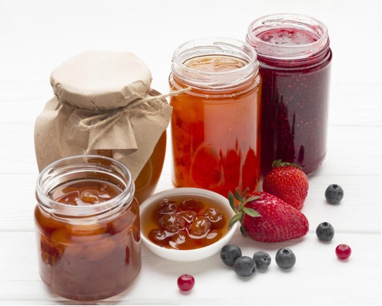

Industry Information
Oct. 25, 2024
Potassium sorbate is a salt derived from sorbic acid, commonly used as a food preservative to inhibit mold, yeast, and other microorganisms. As a cost-effective preservative, potassium sorbate in food is popular for maintaining the freshness of packaged goods, particularly in environments where longer shelf life is necessary. Its wide usage has led to questions about its safety and the types of foods in which it is most commonly found.

Potassium sorbate is a versatile preservative found in numerous food products, particularly those susceptible to spoilage. Its primary function is to extend the shelf life of products by preventing microbial growth, thus maintaining product quality for longer periods. Here are the main applications of potassium sorbate in food:
Dairy Products: Potassium sorbate is frequently used in products like cheese, yogurt, and sour cream to prevent the growth of mold and yeast, helping maintain freshness for extended periods.
Baked Goods: In items such as bread, cakes, and pastries, potassium sorbate preserves texture and flavor by keeping molds and other spoilage microorganisms at bay.
Beverages: Potassium sorbate is found in both alcoholic and non-alcoholic beverages like wine, fruit juices, and sodas. It helps retain the quality of these drinks by preventing fermentation after bottling.
Jams and Jellies: This preservative ensures that sugary spreads stay free from spoilage while maintaining their texture and flavor.
Processed Meats: In foods like sausages and dried meats, potassium sorbate slows down bacterial growth, extending their shelf life.
While its primary use is as a preservative, potassium sorbate in food is valued for being flavorless and odorless, meaning it doesn’t alter the taste or scent of the foods it protects. This makes it an ideal choice for food manufacturers aiming to balance quality preservation with taste consistency.
Potassium sorbate is commonly found in processed and packaged foods, particularly those that need to remain fresh for extended periods. Some examples of foods that contain potassium sorbate include:
Cheese and dairy products
Packaged baked goods
Canned fruits and vegetables
Wine and other beverages
Pickled products
Dried fruits and nuts
Sauces and dressings
The wide variety of products containing potassium sorbate highlights its versatility as a preservative, especially in items prone to spoilage.
One of the most common concerns about food preservatives is their safety, and potassium sorbate is no exception. Fortunately, extensive studies and data have shown that potassium sorbate is safe for consumption when used in the amounts typically found in food. Regulatory bodies like the U.S. Food and Drug Administration (FDA) and the European Food Safety Authority (EFSA) have deemed potassium sorbate to be safe, classifying it as "Generally Recognized as Safe" (GRAS) when used within recommended limits.
According to the EFSA, the acceptable daily intake (ADI) for potassium sorbate is 25 milligrams per kilogram of body weight. This level ensures that even regular consumption of foods containing potassium sorbate poses no significant health risks to the average person. Additionally, potassium sorbate does not accumulate in the body, as it is metabolized and excreted quickly.
That said, some individuals may be sensitive to potassium sorbate, experiencing mild allergic reactions like skin irritation or headaches. However, these cases are rare, and for the vast majority of consumers, potassium sorbate in food remains a safe and effective preservative.
In conclusion, potassium sorbate use in food plays a vital role in extending the shelf life of many everyday items without compromising taste or safety. As a widely accepted and effective preservative, potassium sorbate can be found in dairy products, baked goods, beverages, and more. Regulatory authorities have confirmed its safety for consumption, and it remains a popular choice among food manufacturers.
Understanding the role of potassium sorbate in food not only helps consumers make informed choices but also highlights the importance of safe, reliable preservatives in maintaining the quality and freshness of the foods we consume daily.
By ensuring potassium sorbate in food products remains at safe levels, manufacturers can deliver longer-lasting products without negatively impacting consumer health.
TJCY Chemical Trading Company provides a variety of food additives including potassium sorbate. With years of expertise in the chemical industry, TJCY is committed to providing reliable, safe, and effective food additives for various industries, including food and beverage. As a leading chemical trading company, TJCY ensures that their potassium sorbate meets the highest standards of quality and safety, catering to the needs of manufacturers looking to extend the shelf life of their products while maintaining freshness and taste. For more information about TJCY's product offerings, visit TJCY's website.

Tianjin Chengyi International Trading Co., Ltd.
8th floor 5th Building of North America N1 Cultural and Creative Area，No. 95 South Sports Road, Xiaodian District, Taiyuan, Shanxi, China.
+86 351 828 1248 /
Navigation